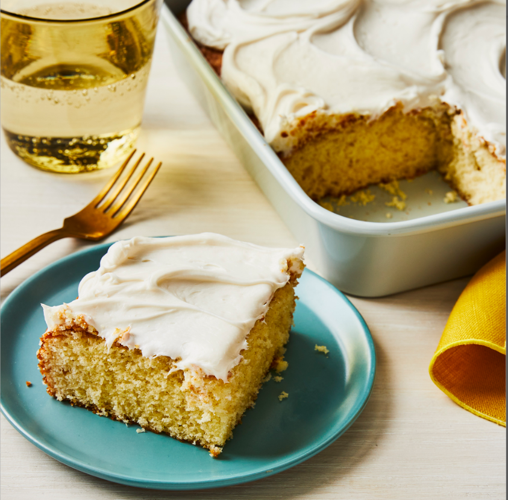

Simple white cake

This is a cake I made when I needed to bring a dessert for a White party. It was Simple to make and quick to do.
- 1 cup of white sugar
- 1/2 cup of unsalted butter
- 2 large eggs
- 2 teaspoons of vanilla extract
- 1 1/2 cups of all-purpose flour
- 1 3/4 teaspoons of baking powder
- 1/2 cups of milk
- Preheat the oven to 350 degrees F (175 degrees C). Grease and flour a 9-inch square cake pan.
- Cream sugar and butter together in a mixing bowl. Add eggs, one at a time, beating briefly after each addition. Stir in vanilla.
- Combine flour and baking powder in a separate bowl. Add to the wet ingredients and mix well. Add milk and stir until smooth. Pour batter into the prepared cake pan.
- Bake in the preheated oven until the top springs back when lightly touched, 30 to 40 minutes.